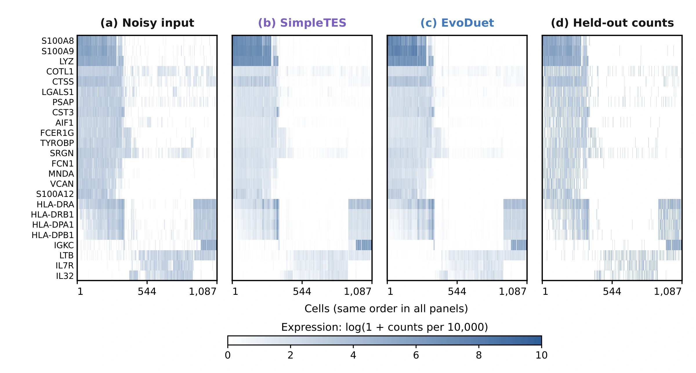

- Previous best
- 0.722690
- EvoDuet
- 0.722906
- Objective
- Held-out score ↑
- Run cost
- $38.45


Source
Python
# EVOLVE-BLOCK-START
import numpy as np
import scipy.sparse as sp
import graphtools
import scprep
def _as_counts(X):
"""Return X as a finite dense nonnegative floating-point matrix."""
x = np.asarray(scprep.utils.toarray(X), dtype=np.float64)
return np.maximum(np.nan_to_num(x, nan=0.0, posinf=0.0, neginf=0.0), 0.0)
def _backproject(graph, values, approximate):
"""Map graph coordinates back to the original gene space."""
y = scprep.utils.toarray(values)
if approximate:
y = graph.inverse_transform(y, columns=None)
return np.asarray(y, dtype=np.float64)
def _diffuse(op, values, steps):
"""Apply a sparse diffusion operator repeatedly."""
y = values
for _ in range(int(steps)):
y = op.dot(y)
return np.asarray(scprep.utils.toarray(y), dtype=np.float64)
def _leave_one_out_operator(op):
"""Remove graph self-loops and renormalize rows for noise-independent smoothing."""
p = op.tocsr(copy=True) if sp.issparse(op) else sp.csr_matrix(op)
p.setdiag(0.0)
p.eliminate_zeros()
rows = np.asarray(p.sum(axis=1)).ravel()
inv = np.zeros_like(rows, dtype=np.float64)
good = rows > 1e-12
inv[good] = 1.0 / rows[good]
q = sp.diags(inv).dot(p).tocsr()
# Extremely degenerate rows should retain a valid stochastic transition.
bad = np.flatnonzero(~good)
if bad.size:
q = q.tolil()
q[bad, bad] = 1.0
q = q.tocsr()
return q
def _gene_calibration(prediction, observed, strength):
"""Correct predicted gene frequencies conservatively toward training frequencies."""
if strength <= 0:
return prediction
eps = 1e-12
p = np.maximum(prediction.sum(axis=0), 0.0)
q = np.maximum(observed.sum(axis=0), 0.0)
p /= max(float(p.sum()), eps)
q /= max(float(q.sum()), eps)
ratio = np.clip((q + eps) / (p + eps), 0.88, 1.14)
return prediction * np.power(ratio[None, :], float(strength))
def _poisson_shrink(prediction, gene_mean, strength):
"""Apply smooth abundance-dependent shrinkage to fractional predictions."""
if strength <= 0:
return prediction
rarity = (
0.76
+ 1.18 / (gene_mean + 1.0)
+ 0.20 / np.sqrt(gene_mean + 0.15)
)
rarity = np.clip(rarity, 0.76, 2.55)
threshold = float(strength) * rarity[None, :]
p = np.maximum(prediction, 0.0)
return p * p / (p + threshold)
def magic_denoise(
X,
knn=5,
t=3,
n_pca=100,
solver="approximate",
decay=1,
knn_max=None,
random_state=None,
n_jobs=1,
verbose=False,
shrink=0.09,
gene_calibration=0.25,
raw_anchor=0.10,
positive_anchor=0.02,
log_mix=0.20,
loo_mix=0.55,
**kwargs,
):
"""Denoise counts with square-root MAGIC and leave-one-out diffusion.
A graph is built from library-normalized square-root counts. Diffusion
estimates are formed from both the usual operator and a self-loop-free,
row-renormalized operator; their mixture reduces self-referential
overfitting while retaining the local structure that benefits log-space
error. Estimates are transformed back to count scale, shrunk for rare
genes, calibrated globally, and weakly blended with log-normalized
diffusion.
"""
x = _as_counts(X)
if x.ndim != 2:
raise ValueError("X must be a two-dimensional count matrix")
n_cells, n_genes = x.shape
if n_cells <= 1 or n_genes == 0:
return x.copy()
k = min(max(int(knn), 1), n_cells - 1)
if knn_max is None:
kmax = max(k + 1, 3 * k)
else:
kmax = int(knn_max)
kmax = min(max(k, kmax), n_cells - 1)
steps = max(1, int(t))
root = np.sqrt(x)
root_norm, root_lib = scprep.normalize.library_size_normalize(
root, rescale=1, return_library_size=True
)
root_norm = _as_counts(root_norm)
root_lib = np.maximum(
np.asarray(root_lib, dtype=np.float64).reshape(-1), 1e-10
)
if n_pca is None or int(n_pca) <= 0:
pca_dim = None
else:
pca_dim = min(int(n_pca), n_genes, max(1, n_cells - 1))
graph = graphtools.Graph(
root_norm,
n_pca=pca_dim,
knn=k,
knn_max=kmax,
decay=decay,
thresh=1e-4,
random_state=random_state,
n_jobs=n_jobs,
verbose=0,
)
approximate = str(solver).lower() == "approximate"
base = graph.data_nu if approximate else graph.data
normal_op = graph.diff_op
loo_op = _leave_one_out_operator(normal_op)
weights = np.arange(steps, 0, -1, dtype=np.float64)
weights *= 0.88 / max(float(weights.sum()), 1e-12)
normal = 0.12 * np.maximum(
_backproject(graph, base, approximate), 0.0
)
loo = np.zeros_like(normal)
for i in range(steps):
normal_state = _diffuse(normal_op, base, i + 1)
loo_state = _diffuse(loo_op, base, i + 1)
normal += weights[i] * np.maximum(
_backproject(graph, normal_state, approximate), 0.0
)
loo += weights[i] * np.maximum(
_backproject(graph, loo_state, approximate), 0.0
)
# Low-capture cells benefit more from independent neighbors; higher-quality
# cells retain somewhat more of the conventional MAGIC estimate.
median_lib = max(float(np.median(root_lib)), 1e-10)
quality = np.clip(root_lib / median_lib, 0.25, 4.0)
capture = quality / (1.0 + quality)
loo_weight = np.clip(
float(loo_mix) * (1.20 - 0.65 * capture),
0.20,
0.82,
)
smooth = (
loo_weight[:, None] * loo
+ (1.0 - loo_weight[:, None]) * normal
)
gene_mean = np.mean(x, axis=0)
capture_anchor = np.clip(
float(raw_anchor) * (0.40 + 0.60 * capture),
0.0,
0.18,
)
gene_anchor = 0.72 + 0.55 * gene_mean / (gene_mean + 1.0)
anchor = np.clip(
capture_anchor[:, None] * gene_anchor[None, :],
0.0,
0.20,
)
observed_stabilized = root_norm * root_norm * root_lib[:, None]
smooth = (1.0 - anchor) * smooth + anchor * observed_stabilized
den = np.square(np.maximum(smooth, 0.0))
den *= root_lib[:, None]
den = _poisson_shrink(den, gene_mean, max(float(shrink), 0.0))
den = _gene_calibration(den, x, float(gene_calibration))
# Log-space diffusion is restricted by empirical gene support, preventing
# rare genes from receiving many harmful sub-molecule predictions.
lm = np.clip(float(log_mix), 0.0, 0.24)
if lm > 0:
library = np.maximum(x.sum(axis=1, keepdims=True), 1e-10)
log_x = np.log1p(x / library * 10000.0)
log_smooth = 0.12 * log_x
for i in range(steps):
log_smooth += weights[i] * _diffuse(
normal_op, log_x, i + 1
)
log_pred = np.expm1(np.maximum(log_smooth, 0.0))
total = np.maximum(den.sum(axis=1, keepdims=True), 1e-10)
p = den / total
q = log_pred / np.maximum(log_pred.sum(axis=1, keepdims=True), 1e-10)
support = np.clip(
0.25 + 1.10 * gene_mean / (gene_mean + 0.35),
0.25,
1.0,
)
mix = np.clip(lm * support[None, :], 0.0, 0.24)
den = ((1.0 - mix) * p + mix * q) * total
# Preserve a small amount of observed positive evidence, but do not
# manufacture additional signal from zeros.
pa = np.clip(float(positive_anchor), 0.0, 0.08)
if pa > 0:
total = np.maximum(den.sum(axis=1, keepdims=True), 1e-10)
observed_profile = x / np.maximum(x.sum(axis=1, keepdims=True), 1e-10)
observed_profile *= total
confidence = np.clip(
pa * (0.55 + 0.75 * x / (x + 1.5)),
0.0,
0.055,
)
den = np.where(
x > 0,
(1.0 - confidence) * den + confidence * observed_profile,
den,
)
return np.maximum(
np.nan_to_num(den, nan=0.0, posinf=0.0, neginf=0.0),
0.0,
)
# EVOLVE-BLOCK-END
Requires the original benchmark harness and dependencies.
Score history 100 iterations
Score history
Best-so-far search-time score ↑
Search-time scores; the final native objective is reported above.
Run details
A denoising program that combines library-size normalization, graph-based smoothing, and count-aware estimates.
The headline is the recorded PBMC/Tabula held-out mean. The expression window is a visualization of a PBMC replay, not a new aggregate evaluation.
Recorded score: 0.7229058589674775 · reference: 0.7226904858837242 · seed: 42.
Program ID: a425368e-b9f6-4abf-9420-2c2f363d3dca
Source SHA-256: 6dfe6028f7f4584dce801d2b4ee6c8c023a16003e19147557956171833202166
History SHA-256: 62a353bc6e6e111ba5d120f8afa3528b8f0827db9b1774f419260605ce85b2e6